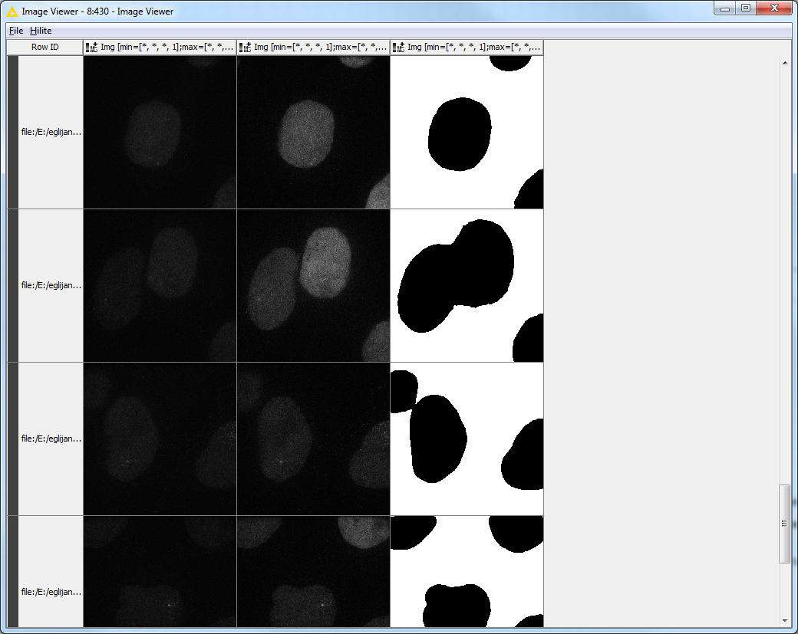
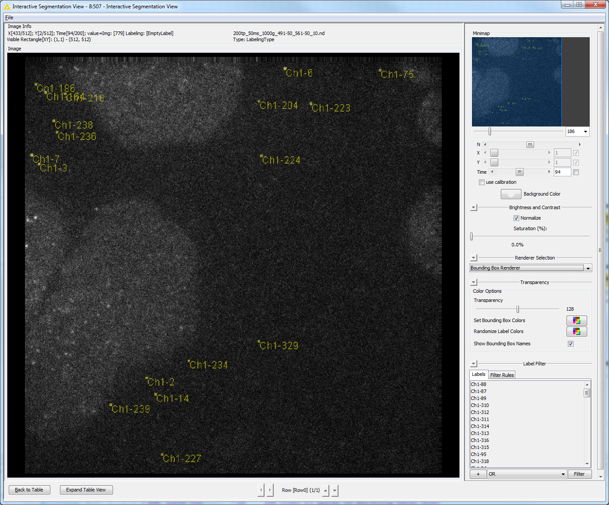

@Plugin(type = Command.class, headless = true, menuPath = "FMI>Track Spots (Subpixel localization)")
public class TrackMateWrapper implements Command {
@Parameter
private LogService log;
@Parameter(label = "Input image")
private ImagePlus imp;
@Parameter(label = "Frame interval")
private double frameInterval;
@Parameter(label = "ROI mask", required = false)
private ImagePlus mask;
@Parameter(label = "Spot radius")
private double spotSize = DetectorKeys.DEFAULT_RADIUS;
@Parameter(label = "Spot quality threshold")
private double spotThreshold = DetectorKeys.DEFAULT_THRESHOLD;
@Parameter(label = "Linking max distance")
private double linkingMaxDistance = TrackerKeys.DEFAULT_LINKING_MAX_DISTANCE;
@Parameter(label = "Gap closing max distance")
private double closingMaxDistance = TrackerKeys.DEFAULT_GAP_CLOSING_MAX_DISTANCE;
@Parameter(label = "Gap closing max frame gap")
private int frameGap = TrackerKeys.DEFAULT_GAP_CLOSING_MAX_FRAME_GAP;
@Parameter(type = ItemIO.OUTPUT)
private int nSpotsFound;
@Parameter(type = ItemIO.OUTPUT)
private int nTracksFound;
@Parameter(type = ItemIO.OUTPUT)
private double[] spotID;
@Parameter(type = ItemIO.OUTPUT)
private double[] spotQuality;
@Parameter(type = ItemIO.OUTPUT)
private double[] trackID;
@Parameter(type = ItemIO.OUTPUT)
private double[] frame;
@Parameter(type = ItemIO.OUTPUT)
private double[] t;
@Parameter(type = ItemIO.OUTPUT)
private double[] x;
@Parameter(type = ItemIO.OUTPUT)
private double[] y;
@Parameter(type = ItemIO.OUTPUT)
private double[] z;
@Parameter(type = ItemIO.OUTPUT)
private double[] intensity;
@Parameter(type = ItemIO.OUTPUT)
private double[] radius;
@Parameter(type = ItemIO.OUTPUT)
private double[] estDiameter;
@Override
public void run() {
// Set mask ROI on input image
if (mask != null) {
mask.getProcessor().setThreshold(1.0, 255.0,
ImageProcessor.NO_LUT_UPDATE);
Roi roi = ThresholdToSelection.run(mask);
imp.setRoi(roi);
}
// Create TrackMate instance with settings
Model model = new Model();
Settings settings = new Settings();
settings.setFrom(imp);
settings.dt = frameInterval;
settings.detectorFactory = new LogDetectorFactory<>();
settings.detectorSettings = settings.detectorFactory
.getDefaultSettings();
settings.detectorSettings.put(
DetectorKeys.KEY_DO_SUBPIXEL_LOCALIZATION, true);
settings.detectorSettings.put(DetectorKeys.KEY_RADIUS, spotSize);
settings.detectorSettings
.put(DetectorKeys.KEY_THRESHOLD, spotThreshold);
settings.trackerFactory = new SparseLAPTrackerFactory();
settings.trackerSettings = LAPUtils.getDefaultLAPSettingsMap();
settings.trackerSettings.put(TrackerKeys.KEY_LINKING_MAX_DISTANCE,
linkingMaxDistance);
settings.trackerSettings.put(TrackerKeys.KEY_GAP_CLOSING_MAX_DISTANCE,
closingMaxDistance);
settings.trackerSettings.put(TrackerKeys.KEY_GAP_CLOSING_MAX_FRAME_GAP,
frameGap);
settings.addSpotAnalyzerFactory(new SpotIntensityAnalyzerFactory<>());
settings.addSpotAnalyzerFactory(new SpotRadiusEstimatorFactory<>());
settings.addTrackAnalyzer(new TrackDurationAnalyzer());
TrackMate trackmate = new TrackMate(model, settings);
// Process (spot detection and tracking)
if (!trackmate.checkInput()) {
log.error("Configuration error: " + trackmate.getErrorMessage());
return;
}
if (!trackmate.process()) {
log.error("Processing error: " + trackmate.getErrorMessage());
return;
}
// Prepare lists to collect results
ArrayList spotIDlist = new ArrayList<>();
ArrayList qualityList = new ArrayList<>();
ArrayList trackIDlist = new ArrayList<>();
ArrayList durationList = new ArrayList<>();
ArrayList frameList = new ArrayList<>();
ArrayList tList = new ArrayList<>();
ArrayList xList = new ArrayList<>();
ArrayList yList = new ArrayList<>();
ArrayList zList = new ArrayList<>();
ArrayList intensityList = new ArrayList<>();
ArrayList radiusList = new ArrayList<>();
ArrayList diameterList = new ArrayList<>();
TrackModel trackModel = model.getTrackModel();
FeatureModel featureModel = model.getFeatureModel();
for (Integer tID : trackModel.trackIDs(false)) {
for (Spot spot : trackModel.trackSpots(tID)) {
spotIDlist.add((double) spot.ID());
qualityList.add(spot.getFeature(Spot.QUALITY));
trackIDlist.add((double) tID);
durationList.add(featureModel.getTrackFeature(tID,
TrackDurationAnalyzer.TRACK_DURATION));
frameList.add(spot.getFeature(Spot.FRAME));
tList.add(spot.getFeature(Spot.POSITION_T));
xList.add(spot.getDoublePosition(0));
yList.add(spot.getDoublePosition(1));
zList.add(spot.getDoublePosition(2));
intensityList
.add(spot
.getFeature(SpotIntensityAnalyzerFactory.TOTAL_INTENSITY));
radiusList.add(spot.getFeature(Spot.RADIUS));
diameterList
.add(spot
.getFeature(SpotRadiusEstimatorFactory.ESTIMATED_DIAMETER));
}
}
// Get results (spot list with trackIDs)
spotID = Doubles.toArray(spotIDlist);
spotQuality = Doubles.toArray(qualityList);
trackID = Doubles.toArray(trackIDlist);
frame = Doubles.toArray(frameList);
t = Doubles.toArray(tList);
x = Doubles.toArray(xList);
y = Doubles.toArray(yList);
z = Doubles.toArray(zList);
intensity = Doubles.toArray(intensityList);
radius = Doubles.toArray(radiusList);
estDiameter = Doubles.toArray(diameterList);
// Return summary values
nSpotsFound = model.getSpots().getNSpots(false);
nTracksFound = model.getTrackModel().nTracks(false);
}
} 